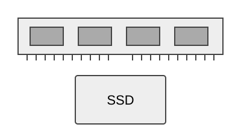

Память и накопитель
Оперативная память хранит данные запущенных программ. Она работает быстро, но после выключения питания её содержимое теряется.
Накопитель сохраняет файлы после выключения компьютера. Например, на SSD находятся операционная система, установленные программы и документы пользователя.

При запуске программы нужные данные загружаются с накопителя в оперативную память, после чего их обрабатывает процессор.